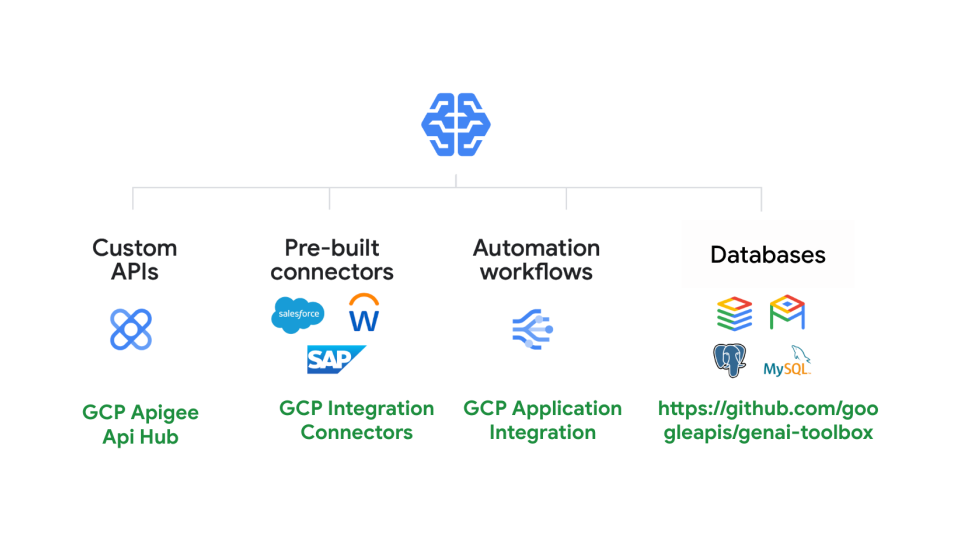
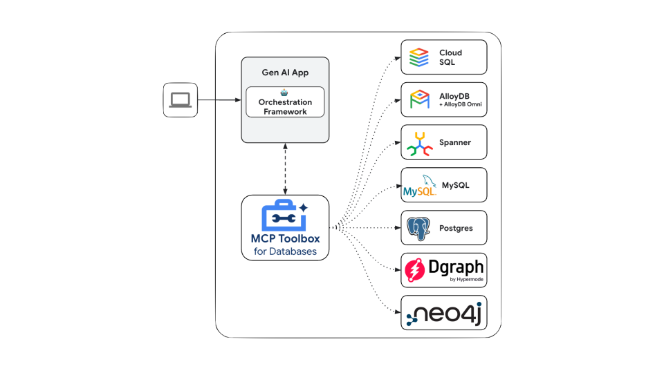

Google Cloud 工具集
Google Cloud 工具集能便捷地将您的智能体与 Google Cloud 产品服务相连。仅需几行代码，即可实现以下连接：
- 数百万个自定义 API：开发者通过 Apigee 托管的各类接口
- 数百个预构建连接器：支持 Salesforce、Workday、SAP 等企业系统
- 自动化工作流：基于应用集成构建的流程自动化
- 数据库服务：通过 MCP Toolbox 连接 Spanner、AlloyDB、Postgres 等数据库

Apigee API Hub 工具集
ApiHubToolset 可将 Apigee API hub 中任何文档化的 API 快速转化为工具。本节将分步指导如何设置 API 安全连接的认证配置。
前置条件
- 安装 ADK
- 安装 Google Cloud CLI
- 已配置 Apigee API hub 实例并包含文档化 API（如 OpenAPI 规范）
- 完成项目结构搭建及必要文件创建
创建 API Hub 工具集
注：本教程包含智能体创建步骤。若已有智能体，仅需执行部分操作。
-
获取访问令牌以便 APIHubToolset 从 API Hub 获取规范。终端执行：
-
确保所用账号具有必要权限。可使用预定义角色
roles/apihub.viewer或分配以下权限：- apihub.specs.get（必需）
- apihub.apis.get（可选）
- apihub.apis.list（可选）
- apihub.versions.get（可选）
- apihub.versions.list（可选）
- apihub.specs.list（可选）
-
使用
APIHubToolset创建工具。将以下代码添加至tools.py：若 API 需认证，必须配置认证方式。以下示例演示如何配置 API 密钥。ADK 支持基于令牌的认证（API 密钥、Bearer 令牌）、服务账号和 OpenID Connect，后续将增加 OAuth2 流程支持。
from google.adk.tools.openapi_tool.auth.auth_helpers import token_to_scheme_credential from google.adk.tools.apihub_tool.apihub_toolset import APIHubToolset # 为 API 提供认证（若无需认证可省略） auth_scheme, auth_credential = token_to_scheme_credential( "apikey", "query", "apikey", apikey_credential_str ) sample_toolset_with_auth = APIHubToolset( name="apihub-sample-tool", description="示例工具", access_token="...", # 粘贴步骤1生成的访问令牌 apihub_resource_name="...", # API Hub 资源名称 auth_scheme=auth_scheme, auth_credential=auth_credential, )生产环境建议使用服务账号替代访问令牌。在上述代码中，使用
service_account_json=service_account_cred_json_str并提供服务账号凭证。对于 apihub_resource_name：若已知 OpenAPI 规范 ID，使用格式：
`projects/我的项目ID/locations/us-west1/apis/我的API-ID/versions/版本ID/specs/规范ID`若需自动获取 API 的首个可用规范，使用格式：`projects/我的项目ID/locations/us-west1/apis/我的API-ID` -
创建 Agent.py 并将工具添加至智能体定义：
-
配置 `__init__.py` 以暴露智能体：
-
启动 Google ADK Web UI 测试智能体：
访问 http://localhost:8000 通过 Web UI 测试。
应用集成工具集
通过 ApplicationIntegrationToolset，您可安全合规地为智能体接入企业应用。该工具集提供 100+ 预构建连接器，支持 Salesforce、ServiceNow、JIRA、SAP 等系统（含本地与 SaaS 应用）。您还可将现有应用集成工作流转化为智能体工具。
前置条件
运行智能体时，确保在项目根目录执行 adk web
使用集成连接器
通过集成连接器连接企业应用：
-
需在与连接器相同区域配置应用集成，并从模板库导入发布连接工具
-
使用
ApplicationIntegrationToolset创建工具：from google.adk.tools.application_integration_tool.application_integration_toolset import ApplicationIntegrationToolset connector_tool = ApplicationIntegrationToolset( project="测试项目", # 替换为连接器所在GCP项目 location="us-central1", #替换为连接器区域 connection="测试连接", #替换为连接器名称 entity_operations={"实体1": ["LIST","CREATE"], "实体2": []}, #空列表表示支持该实体所有操作 actions=["操作1"], #替换为实际操作 service_account_credentials='{...}', # 可选 tool_name="工具前缀", tool_instructions="..." )注：可提供服务账号替代默认凭证。通过连接器 API listActions 和 listEntityTypes 查询支持的实体与操作
-
将工具添加至智能体。更新
agent.py文件： -
配置 `__init__.py` 暴露智能体：
-
启动 Google ADK Web UI 测试：
访问 http://localhost:8000 选择 my_agent（与文件夹同名）
使用应用集成工作流
将现有应用集成工作流转化为智能体工具：
-
使用
ApplicationIntegrationToolset创建工具： -
更新
agent.py文件添加工具： -
配置 `__init__.py` 暴露智能体：
-
启动 Web UI 测试：
访问 http://localhost:8000 选择对应智能体
数据库工具箱工具
MCP Toolbox for Databases 是开源的企业级数据库 MCP 服务器，通过处理连接池、认证等复杂问题，助您更安全高效地开发数据库工具。
Google Agent Development Kit (ADK) 内置工具箱支持。详见入门指南或配置文档。

配置与部署
Toolbox 需自行部署管理，参考官方文档： * 服务器安装 * 工具箱配置
安装客户端 SDK
ADK 依赖 toolbox-langchain Python 包，使用前需安装：
加载工具箱工具
配置并运行工具箱服务器后，可通过 ADK 加载工具：
from google.adk.tools.toolbox_tool import ToolboxTool
toolbox = ToolboxTool("https://127.0.0.1:5000")
# Load a specific set of tools
tools = toolbox.get_toolset(toolset_name='my-toolset-name'),
# Load single tool
tools = toolbox.get_tool(tool_name='my-tool-name'),
root_agent = Agent(
...,
tools=tools # Provide the list of tools to the Agent
)
高级功能
工具箱提供多项增强功能： * 认证参数：自动绑定 OIDC 令牌值，安全执行敏感查询 * 调用授权：基于用户令牌限制工具访问 * OpenTelemetry：通过遥测技术获取指标与追踪数据